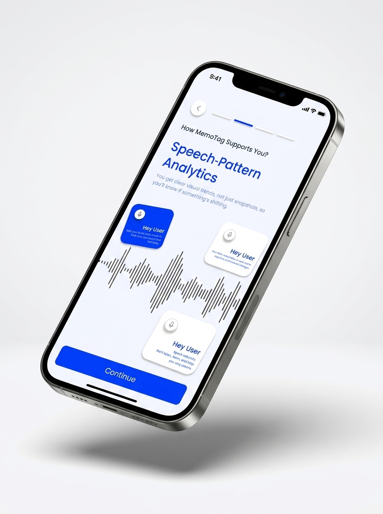
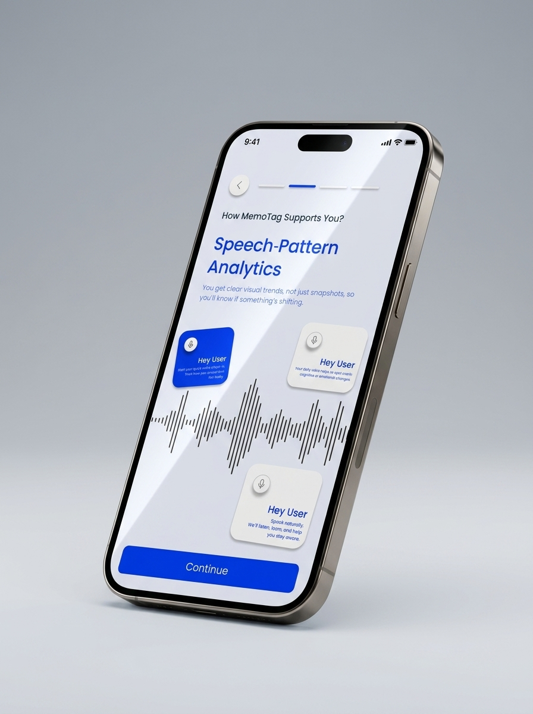
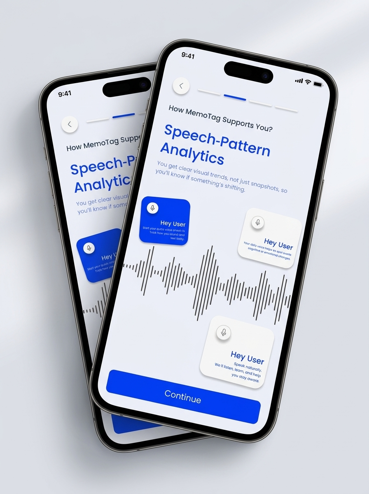

Healthcare
Memory-Care App
Confidential healthcare mobile app for dementia patient and caregiver support — structured from client requirements through full mobile wireframes.
Dementia-care products need to support both patients and caregivers with simple, trustworthy, and easy-to-follow flows. The challenge was to structure a mobile experience that could make care-related actions clearer without overwhelming either user type.
Most existing tools were either too clinical for daily caregiver use or too simplified to handle real care coordination. The product needed to be structured around user trust, clarity of next steps, and an architecture that felt safe and familiar to both sides of the care relationship.
I worked as a Business Analyst and Project Manager. I participated in client meetings, gathered and clarified requirements, understood user and business needs, mapped flows, and created a complete mobile wireframe system based on the client's requirements.
- Requirement gathering from client discussions
- User flow mapping for patient and caregiver sides
- Wireframe creation across key screens
- Feature structure and screen-level planning
- Product documentation support
- Coordination across the product cycle
The work started in client meetings — understanding who the product was for, what caregivers actually needed day-to-day, and where clarity was breaking down in the existing experience.
I mapped the dual-user architecture (patient side vs. caregiver side), defined the core flows, and then built the wireframe system from those foundations. Each screen decision was anchored in: what action does this user need to take, and what makes it harder than it should be?
- Healthcare domain BA and PM work
- Dual-persona product structuring
- Client requirement gathering and translation
- Mobile wireframe architecture
- Sensitivity to user trust and cognitive load
- End-to-end product cycle ownership

App · Isometric View
App · Perspective View
App · Dual Screen ViewHealthcare mobile app · Dementia patient and caregiver support · BA + PM · Mobile wireframes